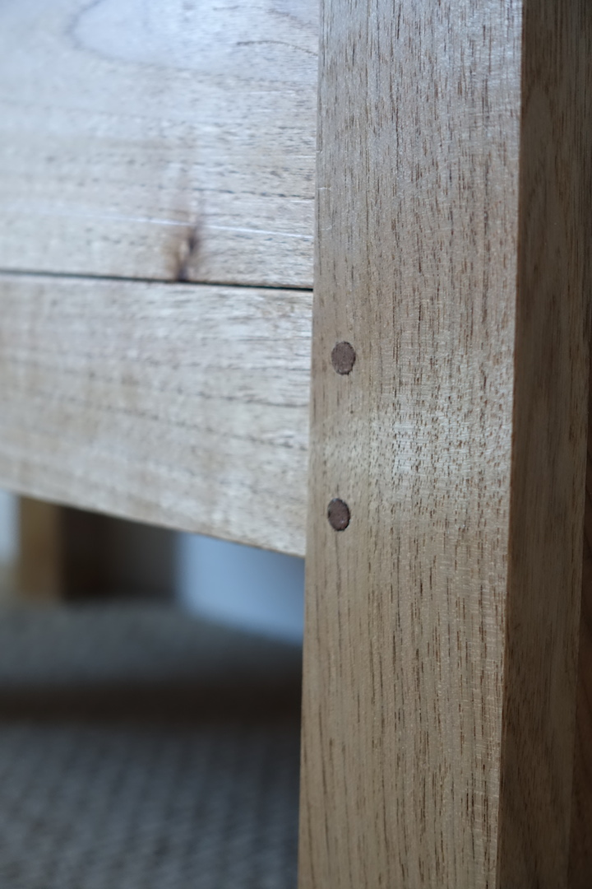

About

My name is Craig Kosonen and I put together this website as a single spot where I can store a record and photos of things I have built, I was tired of having to store photos across different hosting sites and forums. As you can see in my gallery I like to build a large range of furniture types and styles. Most of the furniture I've built resides in my home, although it is slowly filling up. Once my house is full i will continue building furniture for friends, family and anyone else that can appreciate a piece of custom furniture.
{kind=link}
I have a passion for furniture and making furniture. It's something that just sort of happened as I started woodworking and made my first few basic pieces of furniture for my home. As my woodworking skills increased so did my passion for what I was building. I started to research different furniture styles, read up on furniture history, learn about different design elements and browsed many, many pictures online and in books. When I see a piece of furniture many things go through my head; I wonder how it was constructed, what materials and joinery were used. I look for any details; dovetails, carvings, inlay, veneers, I like to inspect them, and hopefully touch them. I also like to look at the overall form of the piece, its size, shape, how it fits in with the room or space in which it resides. Lastly I like to look at the functionality of the piece, is it purely an artful piece meant to look good, is it something meant to be used and abused, or more likely it is somewhere in between, look nice while serving a function. Look at my inspiration page to get an idea of what I like, and perhaps get a glimpse into my future builds.

I enjoy the whole the whole process of building a piece of furniture. Starting at the wood selection, I tend to buy most of my lumber from online classified which lead to some pretty interesting adventures down rural backroads to find barns full of lumber. I typically design a piece of furniture and then select the wood, but sometimes I've had a particularily nice piece of lumber that I've designed a piece around. I like the milling process, seeing the grain come alive from a rough piece of lumber. Using a mix of hand and power tools to do the joinery and other details to make it a nice looking long lasting piece of furniture. Finally putting on the finish and watching the grain pop. Check out my gallery to see some completed pieces.
{kind=link}
Lately I've been playing with veneers instead of solid lumber. I admit that using them is a lot of fun. With veneers you can forget all about having to deal with wood movement and design around the seasonal movement that inevitably happens as the relative humidity changes. It's also cool to get the opportunity to work with wood that I would never see in solid lumber form. All the best logs go straight to veneer mills; so getting to use burled wood, crotch wood, as well as rare and exotic species that I would never be able to afford is pretty awesome. It offers some unique design choices with both the grain selection and overall form of the piece.